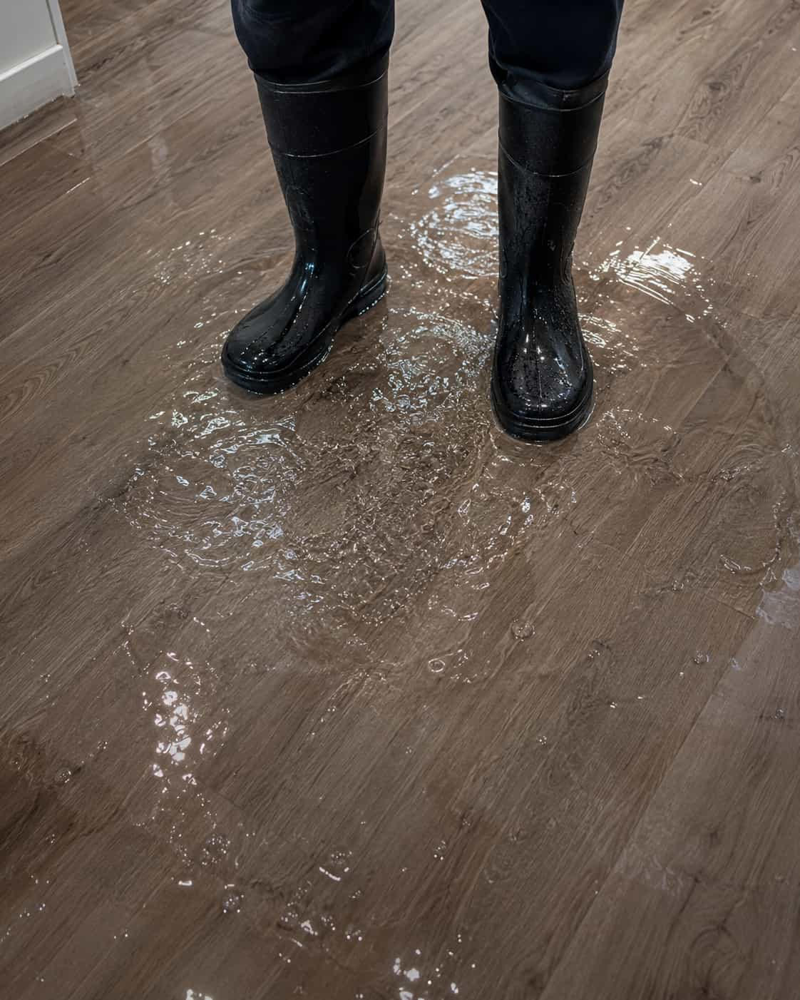

Visible water entry
Homeowners can submit details about active leaks, spreading water, ceiling marks, wall moisture, or appliance-adjacent water concerns.


Why this platform exists
DryHouse Match helps homeowners describe the situation, select a water-damage category, and compare available provider options without presenting the platform as the company performing the work.
Review service categoriesHomeowners can submit details about active leaks, spreading water, ceiling marks, wall moisture, or appliance-adjacent water concerns.
The platform supports request paths for standing water, basement water, storm entry, drain backup concerns, and other visible water accumulation.
Users can share damp odors, humidity concerns, stains, or moisture spots while avoiding diagnostic or medical assumptions.
Platform priority
DryHouse Match helps homeowners organize water-damage request details and compare available provider options. The platform does not present itself as the contractor, restoration company, plumbing company, or inspection provider performing the work.
After submitting details, homeowners can ask participating providers about timing, pricing, licensing, insurance, warranty details, and service terms before deciding whether to continue with any provider.
Trust and transparency
DryHouse Match helps organize homeowner request details and may connect users with participating providers. It does not perform water-damage work directly.
Any provider that contacts a homeowner operates independently. Homeowners should ask about licensing, insurance, pricing, scheduling, warranties, and service terms.
Submitting a request does not create a service agreement. The homeowner decides whether to continue after reviewing available provider information.
Platform questions